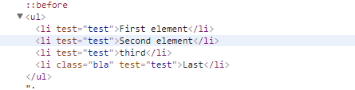

C#爬虫（05）：AngleSharp解析html文档
一、简介
AngleSharp:https://github.com/AngleSharp/AngleSharp
AngleSharp中文官方文档
- https://www.cnblogs.com/cgzl/p/8970582.html
- https://blog.csdn.net/qq_36051316/article/details/80002931
- https://www.cnblogs.com/rbzz/p/10037055.html
AngleSharp是一个.NET库，使您能够解析基于尖括号的超文本，例如HTML，SVG和MathML，该库还支持未经验证的XML，AngleSharp的一个重要方面是CSS也可以解析。
AngleSharp与类似的库（例如HtmlAgilityPack）相比的优势在于：
- 公开的DOM使用的是W3C官方指定的API，即，甚至在AngleSharp中也可以使用querySelectorAll之类的东西。
- 解析器还使用HTML 5.1规范，该规范定义了错误处理和元素校正。
AngleSharp库专注于标准合规性，交互性和可扩展性。因此，它为使用C＃的Web开发人员提供了从在任何现代浏览器中使用DOM所获得的所有可能性。
官方实例：https://github.com/AngleSharp/AngleSharp.Samples
这个简单的示例将使用Wikipedia的网站进行数据检索。

var config = Configuration.Default.WithDefaultLoader(); var address = "https://en.wikipedia.org/wiki/List_of_The_Big_Bang_Theory_episodes"; var context = BrowsingContext.New(config); var document = await context.OpenAsync(address); var cellSelector = "tr.vevent td:nth-child(3)"; var cells = document.QuerySelectorAll(cellSelector); var titles = cells.Select(m => m.TextContent);
二、使用AngleSharp生成自动缩进格式化的html方法
1、操作DOM示例
//创建一个（可重用）解析器前端 var parser = new HtmlParser(); //html DOM节点 var source = " <h1>Some example source</h1> <p>This is a paragraph element</p> "; //解析源文件 var document = parser.Parse(source); //创建P标签 var p = document.CreateElement("p"); p.TextContent = "This is another paragraph."; //添加到DOM document.Body.AppendChild(p); //返回完整html var html = document.DocumentElement.OuterHtml; ViewData["html"] = html;
效果展示
2、更改标签属性
给标签添加自定义属性
var parser = new HtmlParser(); //为以下源代码生成HTML DOM var document = parser.Parse(" <ul> <li>First element</li> <li>Second element</li> <li>third</li> <li class=’bla’>Last</li> </ul> "); //获取所有li元素并将test属性设置为值测试 var elements = document.QuerySelectorAll("li").Attr("test", "test"); //元素仍然包含所有li元素 ViewData["html"] = document.DocumentElement.OuterHtml;
效果展示

3、使用AngleSharp生成html代码自动缩进格式化
var parser = new HtmlParser(); var document = parser.ParseDocument(text); using (var writer = new StringWriter()) { document.ToHtml(writer, new PrettyMarkupFormatter { Indentation = "\t", NewLine = "\n" }); var indentedText = writer.ToString(); }
4、使用AngleSharp下载获取html代码
var requester = new DefaultHttpRequester("Mozilla/5.0 (Windows NT 10.0; WOW64) AppleWebKit/537.36 (KHTML, like Gecko) Chrome/69.0.3497.100 Safari/537.36"); requester.Headers.Add("Accept", "text/html,application/xhtml+xml,application/xml;q=0.9,image/webp,image/apng,*/*;q=0.8"); requester.Headers.Add("Referer", ""); requester.Headers.Add("Accept-Language", "zh-Hans-CN,zh-Hans;q=0.8,en-US;q=0.5,en;q=0.3"); var context = BrowsingContext.New(Configuration.Default.WithLocaleBasedEncoding().WithDefaultLoader().WithDefaultCookies().With(requester)); //根据虚拟请求/响应模式创建文档 var document = context.OpenAsync(url).Result; using (var writer = new StringWriter()) { document.ToHtml(writer, new PrettyMarkupFormatter { Indentation = "\t", NewLine = "\n" }); var indentedText = writer.ToString(); }
5、爬取豆瓣美女图片
新建一个Belle类用于保存获取的图片信息
/// /// 解析html /// public class Belle { /// /// 标题 /// public string Title { get; set; } /// /// 图片地址 /// public string ImageUrl { get; set; } }
获取html并解析
// 设置配置以支持文档加载 var config = Configuration.Default.WithDefaultLoader(); // 豆瓣地址 var address = "https://www.dbmeinv.com/dbgroup/show.htm?cid=4"; // 请求豆辨网 var document = BrowsingContext.New(config).OpenAsync(address); // 根据class获取html元素 var cells = document.Result.QuerySelectorAll(".panel-body li"); // We are only interested in the text - select it with LINQ List list = new List(); foreach (var item in cells) { var belle = new Belle { Title= item.QuerySelector("img").GetAttribute("title"), ImageUrl= item.QuerySelector("img").GetAttribute("src") }; list.Add(belle); } ViewData["html"] = list;
效果如下
分类:
12 C#语言基础, 15 WinForm


posted on 2020-07-10 10:53 springsnow 阅读(1211) 评论(1) 编辑 收藏 举报

· 斗鱼 H5 直播原理解析，它是如何省了 80% 的 CDN 流量？
· 超强的纯 CSS 鼠标点击拖拽效果
· 新零售SaaS架构：中央库存系统架构设计
· 不安装运行时运行 .NET 程序 - NativeAOT
· 从 C# 崩溃异常 中研究页堆布局
· 微软秋季发布会：5G版Surface Pro亮相 加深与苹果生态融合
· 扎克伯格谈新款万元VR头显：成本价，我们不像苹果那样定高价
· 比亚迪×奔驰的火爆新车，让我开到半夜不回家
· 抖音集团上线新 Logo
· 腾讯视频否认将接入 88VIP
» 更多新闻...